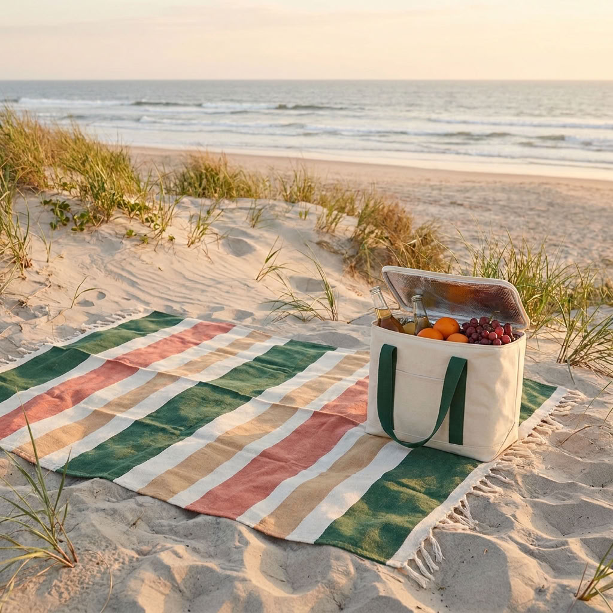
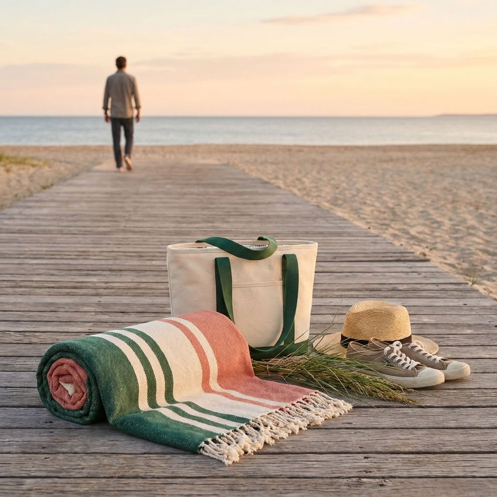
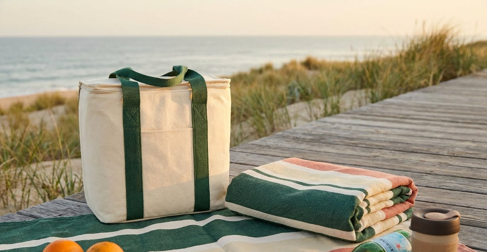

The Weekender
$68A picnic blanket in forest green, warm cream and muted coral. The starting point for your next day outside.
Demo collection · Orders unavailableA blanket, a packed lunch, and a day with nowhere else to be.
Explore the collection ↗A collection for beach mornings, park afternoons and weekends that go a little slower.

A picnic blanket in forest green, warm cream and muted coral. The starting point for your next day outside.
Demo collection · Orders unavailable
An insulated tote for a simple picnic: lunch, drinks and the things you want close at hand.
Demo collection · Orders unavailable
Coastal colours. Everyday essentials. A blanket and a tote for the moments that make a weekend feel like a weekend.
All product images on this page were generated during the Pax demonstration. This page accepts no orders, payments or personal details.